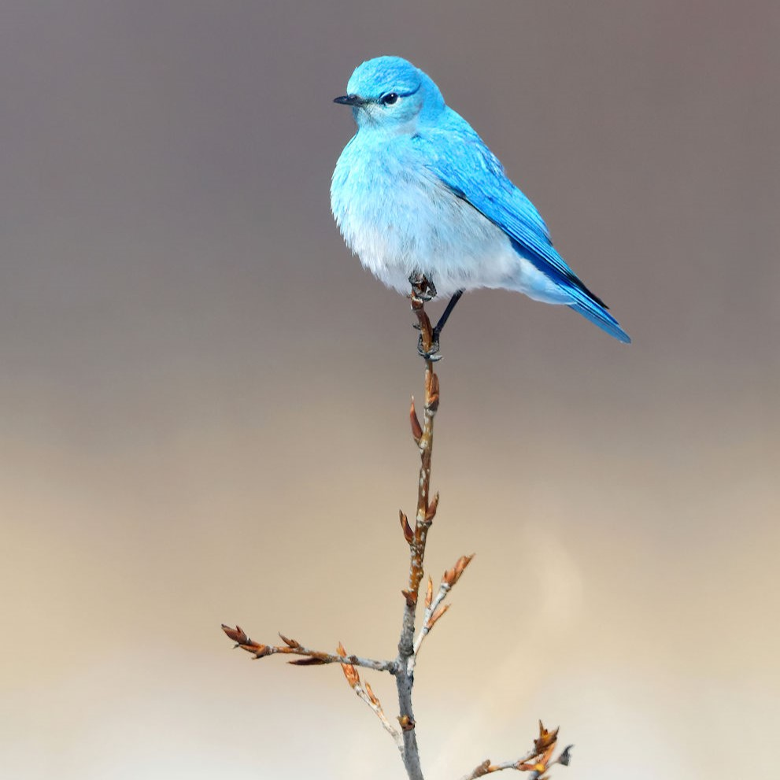

Suggestion:Magpie Shrikes
Description: Magpie Shrikes have entirely black bodies with a bluish gloss, except for white lower backs, pale rumps, and white scapulars forming a ‘V’ shape. They have exceptionally long graduating tails. Their bills, legs, and feet are black, and their eyes are brown. Both sexes look the same, but females have creamy white flanks. They are alternatively placed as the sole members of the genus Urolestes

Suggestion:Thrushes
Wood Thrushes are warm reddish-brown above and white with bold black spots on their underparts,The reclusive Wood Thrush hops through leaf litter on the forest floor, probing for insects, bobbing upright between spurts of digging and leaf-turning.The Wood Thrush breeds in deciduous and mixed forests in the eastern U.S. where there are large trees, moderate understory, shade, and abundant leaf litter for foraging. They winter in lowland tropical forests in Central America.

Today's note
Feed fish at 8:00 am
Feed fish at 12:35 pm
Change water for the bird at 3:38 pm

Purchased:Spotted Dove
Adopted date: 2021 June 14th
Birth date:2021 May 2nd
Last feeded:4:39PM

Purchased:Golden Fish
Adopted date:2024 December 30th
Birth date:2024 April
Last feeded:12:25pm